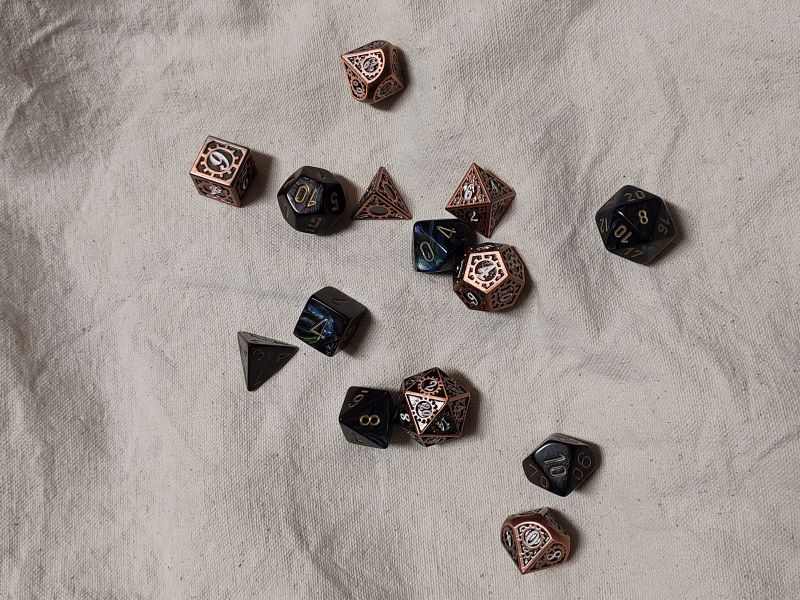
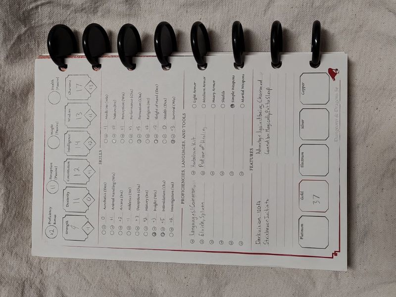

What is D&D? Is it difficult to get into? Where should I start learning?
If these questions sound familiar, you are in the right place.
Welcome to Sarah's Crash Course in Dungeons & Dragons, where I'll answer all those questions, and more!

What Is Dungeons and Dragons?
Dungeons and dragons is a popular table-top roleplaying game based in a fantasy world, originally created by Gary Gygax and Dave Arneston.
The current edition is 5e, and most modern sourcebooks are published by Wizards of the Coast. Games are typically lead by one player,
known as the dungeon or game master (DM or GM), who leads the other players through the world that's been created. The other players create a character
to act as in the world.
D&D is a fun game to play with friends that encourages creative thinking and teamwork. Players get the chance to explore a world vastly different
from our own, affecting the course the story takes with each decision and task. The characters and the DM work together to weave a story that is
ever changing. Each party's game is unique, even if they are based on the same sourcebook or location.
Basic Tools of the Trade

Set of Dice
Standard D&D utilizes a range of dice, from the basic six-sided die (d6) to the larger twenty-sided die (d20), and sometimes even the one hundred-sided die (d100)!
Unique dice have quickly become a niche, and there are many sources online for dice made from different materials and of different sizes.
In lieu of a set of dice, a random number generator can be used, but many players find dice more enjoyable and even start to assign sets to different characters.
Player's Handbook
This is the main reference for gameplay, as it has descriptions of the basic playable races and classes, as well as info on backgrounds, equipment, and spells for magic classes.
Digital copies are available online, and D&D Beyond has it along with many other sourcebooks for reference, some for free, others for purchase.
Character Sheet
There are a million and one styles of character sheets out there, but even just a piece of notebook paper will suffice, so long as it has your basic character info written on it.
Holds notes on character stats, background, inventory, available spells (if applicable), and any extra things you want on hand for gameplay.
Other Players
Though there have been roleplaying games developed for single players, it is much more fun to play D&D with a group!
The best places to start looking for a group to join - if you don't already have one - are local community spaces or game stores and clubs at your school/university.
Imagination
Ultimately with roleplaying games like D&D, you get out what you put in, so the more creative you get, the better your experience is bound to be!